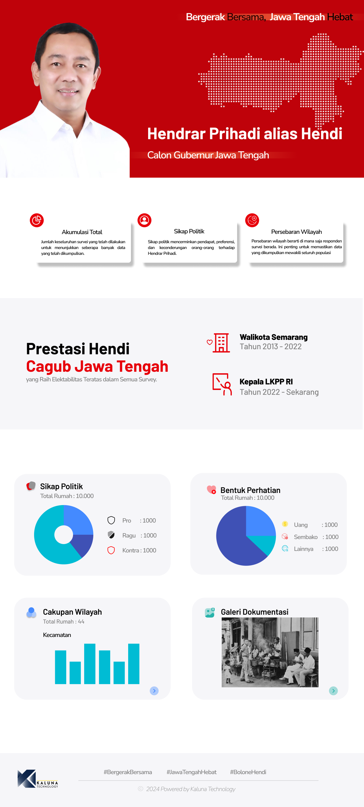
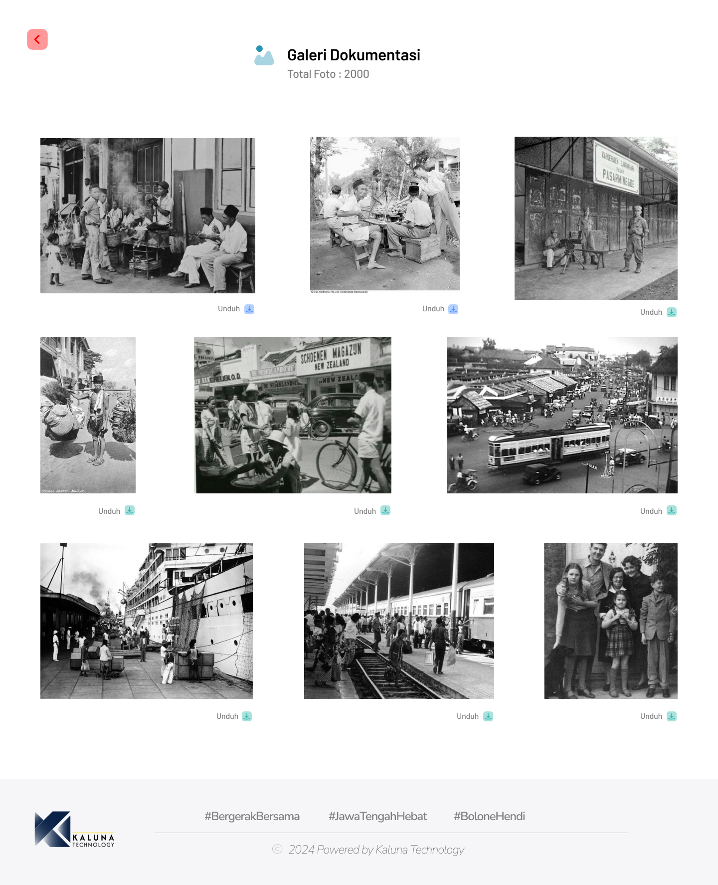

Proyek ini melibatkan pengembangan flyer dan website untuk menghitung suara Pilkada secara mandiri. Tujuan utamanya adalah menyediakan platform yang efisien dan transparan untuk menghitung dan memantau suara Pilkada dengan akurat.

Sebagai Project Coordinator, saya memimpin tim dalam mengatur semua aspek proyek, mulai dari perencanaan dan penyusunan anggaran hingga pembuatan perjanjian kerja sama. Saya memastikan setiap fase proyek berjalan lancar dan sesuai dengan jadwal.
Sebagai Desainer UI/UX, saya bertanggung jawab mendesain antarmuka website kampanye agar sesuai dengan kebutuhan fungsional dan visual. Saya berfokus pada pembuatan antarmuka yang mudah digunakan dan efektif dalam menampilkan informasi suara secara real-time.

Keberhasilan proyek ini tercermin dalam pencapaian keuntungan 80% dari nilai RAB yang diajukan, serta kepuasan klien yang tinggi terhadap kualitas dan fungsionalitas dari hasil desain dan pengelolaan proyek.